GOTCHA is a home security system that can be installed quickly and cheaply without the employ of an electrician or other security professional.
The system would be run through a “Raspberry Pi”, a small, low cost, computer that can be used for a variety of interesting purposes and is extremely energy efficient, using only about 3 watts of power in operation.
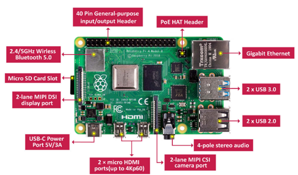
The system takes input from a pre-established or newly installed security device (such as a motion sensor or motion activated camera) and sends an alert to the relative user devices through Secure Shell (SSH), which allows secure remote access. Once alerted to the presence of an intruder and upon confirmation through the camera feed, the user would then be able to perform actions intended to dissuade an intruder from continuing to attempt to enter the premises.
GOTCHA! would be able to run a script to activate one of a series of pre-recorded audio tracks that could range from loud alarm sounds,
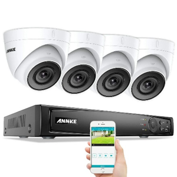 an audio recording warning against intrusion and of the security devices etc. The versatility of the low-profile Raspberry Pi means it can be wired to any number of speakers throughout the premises and repeat the intended audio until the user turns it off. There are plans in place to make this product as environmentally friendly as possible by using as many recycled electronic parts as possible as the project continues to grow.
The main idea behind GOTCHA, and thus, a prerequisite for the project, is the idea of a security system that could be activated and installed with relative ease, straight out of the box as well as being a cost-effective and environmentally friendly alternative to standard security networks such as these 700-dollar systems made by US security company Annke, pictured left.
Motivation:
When we first started the project, our main motivation as a group was the fact that Indi’s idea was a solid foundation for a group project.
As time went on, however, we realised the potential importance of this idea. Several self-install security system projects using the raspberry pi do exist online, however these usually require the user to have some knowledge of circuitry and programming. A ready-out-of-the-box solution like GOTCHA could bring home security to many people who feel anxious about their safety but lack the money and/or expertise to have an expensive system installed. High definition security camera and intrusion deterrence systems could run up thousands of dollars, but this system could be done at a greatly reduced cost and is modular to the needs of the user.
Raspberry Pi computers are very versatile and exploring this aspect of programming would benefit the skillset of our team.
Indi Osborne Thorne, the innovator of “GOTCHA!” has personal motivations in the form of a need to improve his own security and peace of mind regarding the safety of his partner, believing that home security is overlooked due to the low rate of home break ins and that a modular personal security system with deterrence factors can ensure the protection of your belongings and loved ones.
Matthew Limbert, The CEO of Cinco Group, believes that this product is both viable and a step in the right direction for users who would not otherwise engage in their own security project or lack the finances to do so, and considers it an important step towards more people being involved in personalised electronics and home security.
Adam Dooley, A member of the research and development team, truly believes the GOTCHA! System is a great fit for what the security industry needs for it to become accessible and viable to many more people. The ease of use, cheap entry point and scalability will attract potential buyers of all sorts, from those that want the system for personal use to those that want a commercial security system that is able to be grown to suit their business needs.
Manuel Santos, CINCO’s security consultant and a member of the R&D team believes that older people in recent years have become a target of several scams, burglaries and violent home invasions. Most of them, for economic reasons, are not able to provide themselves proper home security due to cost and complexity of the devices available. Providing an alternative low cost and uncomplicated device is my motivation for this project.
Market Landscape
Security systems that utilize Raspberry Pi as a control tower have been developed before. The point of the RPi is to be able to use it for a wide variety of purposes. Several online projects related to security and the RPi already exist. These projects do however require a minimum technical know-how. However, our Project idea takes an existing concept and aims to make it accessible to people who do not want to spend a large amount of time or money on the setup of their system. Our research indicates that comprehensive security systems that include cameras, motion sensors and alarm systems can cost between $350 to $1500 dollars. These systems are usually installed by a security contractor for an installation fee if the user does not have the technical expertise required.
GOTCHA is designed to be installed with minimum knowledge and at the lowest consumer price possible and may bring peace of mind to consumers who are looking to feel more secure in their home, but do not otherwise have the funds to install a security system. It is also environmentally conscious, using as many recycled and low consumption parts as possible.
A study by Wakefield Research, discussed in this article by SDM, suggests that demand for home security is much greater in the current climate than previously suggested.
This study suggests that at least 37% of consumers would like to have a camera, at the very least, protecting their front door, and 35% wanted live streaming home security cameras that could be monitored over the internet in real time.
85% of people surveyed in America believed that a surveillance system would be effective in reducing the rate of package theft during the Christmas/Holiday season.
To complete the project, we should have a completed plan for the creation and implementation of the system, a functioning prototype and a software environment that supports the surveillance system.
Note: Due to personal circumstances, we have been unable to produce a functional prototype for the completion of the project. However, we have completed enough research to be confident in our idea and its ability to be implemented. Matthew has several parts already ordered to complete the first installation at his brother’s house in a rural town, which was recently burglarized.
This configuration would use a single RPi board, with official RPi cameras attached through the CSI port. The advantage of this configuration is the fact that the pieces are all designed to work with the RPi out of the box.
A technical limitation of this configuration is the fact that there is only a single camera slot on the board. The newest RPi models offer support for 2 cameras but only has the one CSI slot.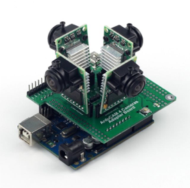 As the prerequisite for this project idea is to have a security system that can be activated out of the box, a solution to this problem is required.
After considering the idea of wiring multiple RPi boards together we realised that this would greatly increase the cost and the complexity of the design, thus, decided to investigate the use of a camera multiplexer. We considered several types of camera adapter for “GOTCHA” but ended up focusing our attention on Arducam multi camera adapter. This device uses asynchronous switching in order to capture “video” from up to 4 cameras at
once. However, the limitations of this technology meant that the image capture itself is quite poor, and the video capture is framerate limited and is worse the more cameras attached to the system. Arducam also offer a multi camera hat that “tricks” the RPi board into thinking that 2 cameras are giving one input.
Using a single RPi board, and the powerful and versatile “MotioneyeOS”, a network of small wireless cameras could be discretely hidden across the range of your WiFi network. This is a very simple way to create a network of cameras but does come with some downsides. 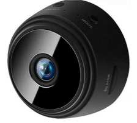
- Relies entirely on Wi-Fi to produce camera feed. This could be problematic if the Wi-Fi experiences a technical problem.
- Can be more easily vandalised than other designs
- Relies on battery power; Must change batteries often to avoid loss of feed.
The main advantage of this design is that it requires the least IT and electronic knowledge. This system should be able to operate within several minutes of being taken out of the box.
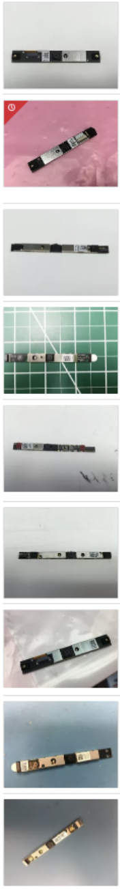
Something we really want to include in GOTCHA is one or more elements of environmental consciousness.
In this regard, we considered using old phone and tablet cameras through the CSI ports on the RPi.
However, these cameras, as it turns out, are often incompatible with devices they were not manufactured specifically for and fail to produce a camera feed. This was discouraging, as other options for multi camera setups came with a higher cost and did not incorporate recycled materials.
However, upon researching some other Raspberry Pi camera projects, we discovered that the webcams in laptops run on the very common “Universal Serial Bus” or USB protocol. In addition to this, they are available to buy in bulk from electronics recycling centres. Even a brief search on eBay shows that these cameras are available for only a few dollars each and in great numbers as shown to the left.
The only downside is that to manufacture this kit for immediate install, we would need a technician to solder these cameras to their own standard USB cable. This process would take quite a bit of time, as the camera wires do not have standardized colours like a USB cable does, requiring testing with a multi-meter in order to isolate the ground wire, and the USB data wires (the 2 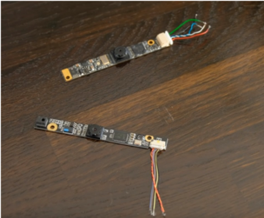 cables twisted around each other) have no indication as to their type, and need to be tested through trial and error. If you plug the camera in and receive a “USB not recognized” error, the camera has been wired incorrectly. While not particularly difficult, this process could be quite time consuming and add to the cost of any potential manufacturing.
These cameras also need to be unique models, as the operating system used by GOTCHA cannot determine the difference between two identical cameras. Fortunately, there are dozens of camera models available, and it is hard to imagine the scope of the installation exceeding the available materials.
Stage 2 - (Limitations and solutions):
This project may be impeded by the issue of using SSH while not directly connected to the network. Normally SSH requires a direct connection in order to operate, however through port forwarding, sometimes referred to as “SSH Tunnelling” it may be possible to operate the system from anywhere without circumventing security such as firewalls. This can be achieved by creating a permanent internet Protocol (IP) address for the Raspberry Pi that the user is able to log into with SSH.
Stage 3: Intruder reaction:
Evidence suggests that traditional alarm systems, while effective in their own way at alerting one to the act of a crime in progress, are inferior to deterrent systems that warn intruders of the fact that they are being recorded and/or the police have already been alerted. The system could scale up from a warning to a loud cacophony of noise that would alert surrounding neighbours to the presence of the intruders. The user could then shut the system down if the intruder leaves by using a follow-up script to turn off the audio. Additionally, if the intruder decided to persist despite all warnings and deterrent measures, the user could respond by calling the police or possibly by installing a script that would alert the authorities to a crime in progress at the desired location.
MotionEyeOS is an open source operating system that turns the traditional Linux OS into a multi-functional video surveillance system. The code itself is fully open source and available on GitHub for free which makes it suitable for our project. The official MotionEyeOS GitHub project can be found here.
The OS is supported by multiple RaspberryPis which means when creating a surveillance system, you can choose the Pi that fits your environment and requirements with piece of mind that it will still function. These PI models include:
- Raspberry Pi A
- Raspberry Pi 2B
- Raspberry Pi 3B
- Raspberry Pi 3B+
- Raspberry Pi Zero W
The software supports both Pi cameras and USB cameras making it the most versatile of options. As a future progression for our system, the OS is also capable of motion detection with email notification which could be our form of notifying the user of an intrusion.
The steps to install MotionEyeOS can be found here. At a basic level it involves:
The OS meets requirements for video history, as you would want to go back on surveillance footage in case of any house breakage to provide the video to the police as evidence. This is done through storage of the footage in either the SD card, LAN storage (hard drive) or cloud storage through your home network.
1. Downloading the compatible version of the OS for you specific Pi.
2. Extracting the file.
3. Burning or writing the image file onto your Pi’s SD card with software such as etcher (https://www.balena.io/etcher/), a free and easy to use software available on Windows, Linux and macOS. The alternative is to do this by command line (instructions in the MotionEyeOS installation guide above).
4. Shutdown the Raspberry Pi and replace the Raspbian SD card with your new MotionEyeOS card.
5. Connect an ethernet and a monitor to the Pi and boot the Pi.
6. Once the initial boot is done it will show the IP address under ‘DNS server address’ or ‘Default gateway’. You will need to note this down.
7. The easiest way to get the system running from there is to put the IP address into the browser, this will present a basic UI and show your cameras in live:
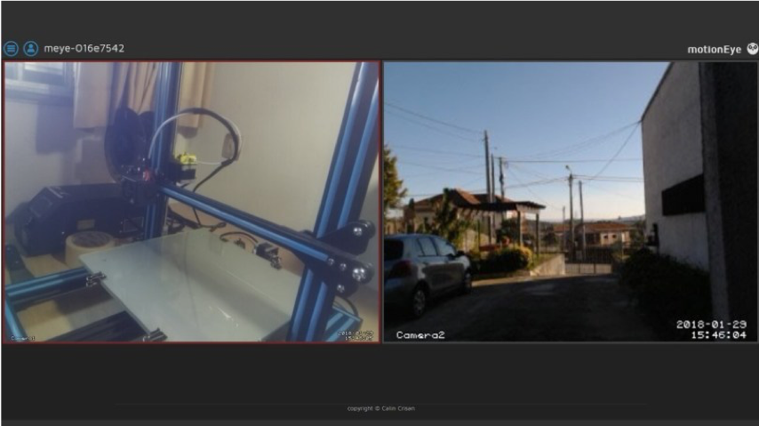
8. From here, you will want to hit the profile icon in the top left “switch user” and you will be presented with a login screen such as the one below. By default, the Username is “admin”, and the password can be left blank.
9. Upon logging into admin, when you press the menu button (the 3 horizontal lines in the top left), you will have a wide range of options that can vary depending on the number of cameras you have:
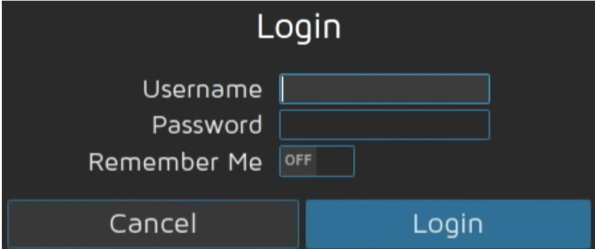
10. Now that we have these extra options there is another vital step for setting up your server, which is to assign a static IP address since if you do not do this, every time you boot the PI it will change which is not ideal. Go to the General tab > turn on Advanced Settings > go to Network tab > change IP Configuration from ‘Automatic’ to Manual.
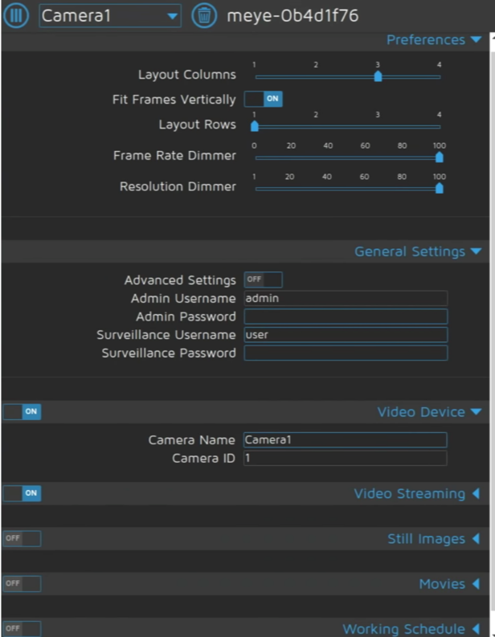
11. From here you will want to consult your network to find out your DHCP pool range. You will want to set the PI to a static IP that is outside of this range to avoid any conflicts with other devices on your network. Click apply and reboot your Pi.
12. At this stage the system is ready to be used and the settings can be configured by the user to make a UI that they desire, they can add cameras, change quality, change the layout, etc. Once the user has configured their settings, they can log out of the admin account so no one else can fiddle with the settings.
Evaluation:
The MotionEyeOS is a very powerful and straight forward system to use. The main issue that arises with MotioneyeOS in relation to our project is that while we could setup the Pi with the software pre-installed prior to selling our system, the user would still need to change settings and set a static IP address. We could solve this by including a user-friendly guide with the instructions but is still something to consider as we are making an ‘easy to setup and use’ system.
Because of the modularity of Raspberry Pi, the system could in theory be used for any number of integrated Wi-Fi controlled measures. It could also be possible to implement an option to upload and play a message at the time of activation that plays on a loop, such as saying, “I know you are there, and I am calling the police” and giving a description of the intruder so they know the feed is live.
Conclusion:
The team behind the project would be developing new skills and ideas as the project moves along, gaining skills in scripting app creation and design and experimenting with the hardware involved. This project would at first be accessible only to very tech savvy people willing to experiment and learn to create their own systems. The user must also have or be willing to acquire motion sensors and or other associated security devices to integrate into the system. However, if the systems could be sold operational as kits, perhaps with guides on how to ad your own elements into the system based on research conducted by the team. Or perhaps a business that installs these low-profile security systems in homes.
Because of the modularity of Raspberry Pi, the system could in theory be used for any number of integrated Wi-Fi controlled measures, although this would require emulation or virtualization of the MotionEyeOS as it would not be able to function standalone in this regard. It could also be possible to implement an option to upload and play a message at the time of activation that plays on a loop, such as saying, “I know you are there, and I am calling the police” and giving a description of the intruder so they know the feed is live.
Device Process:
Stage 1 - Intruder alert: A user receives an alert that an intruder has been detected by motion sensors or sees an intruder via the camera feed and activates the next stage.
Stage 2 - System activation: Indi speculates that the first stage of this project would run the script from a command line before developing a smartphone app with a graphical user interface or GUI that would perform the steps in the command line for the user. The user would use SSH to login to the Raspberry Pi machine and send instructions to run the scripts that command thigs like lights, speakers, volume control and output file selection, with the output being a system of speakers.
Stage 3: Intruder reaction:
Evidence suggests that traditional alarm systems, while effective in their own way at alerting one to the act of a crime in progress, are inferior to deterrent systems that warn intruders of the fact that they are being recorded and/or the police have already been alerted. The system could scale up from a warning to a loud cacophony of noise that would alert surrounding neighbours to the presence of the intruders. The user could then shut the system down if the intruder leaves by using a follow-up script to turn off the audio. Additionally, if the intruder decided to persist despite all warnings and deterrent measures, the user could respond by calling the police or possibly by installing a script that would make the call with a pre-recorded message alerting police to the presence of an unwanted intruder at your desired premises.
Final Product
The RPi unit is the central hub of the device. It would 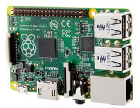
need to have the maximum RAM available for the board used. In this case, a 3B+ for the sake of compatibility, as some pieces of the device cannot function properly on the latest Raspberry Pi 4.
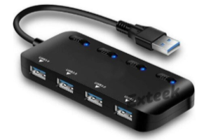
The Pi is connected to a powered USB 3.0 Hub which runs USB connected cameras up to about 30 meters of directline from the main unit using USB repeaters and cables.
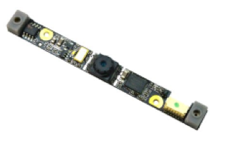
The Cameras included with GOTCHA! Are refurbished laptop USB cameras. The cameras use USB protocol and can be relatively easily attached to a USB cable with some minor tests and soldering.
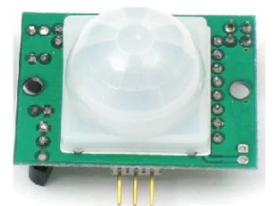One or more motion sensors can be attached to the GPIO ports. MotionEyeOS does not have native support for Motion Sensor input, but a simple script can be run to monitor the pin input and trip a motion sensor alert.
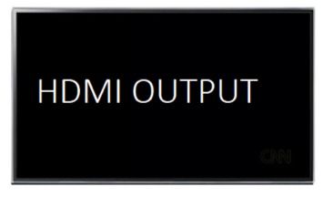
The device is capable of outputting to a HDMI screen. The user can either use their own HDMI screen or opt to include the Raspberry Pi touchscreen.
The system comes pre-installed with the latest version of MotionEyeOS, along with a folder of useful executable scripts, a user-friendly installation guide, and comes in a box that contains necessary setup parts including a panel with the main unit already set up and encased, intended to make installing the unit to a wall as simple as possible, as well as a standard USB keyboard and mouse, and USB cables and repeaters.
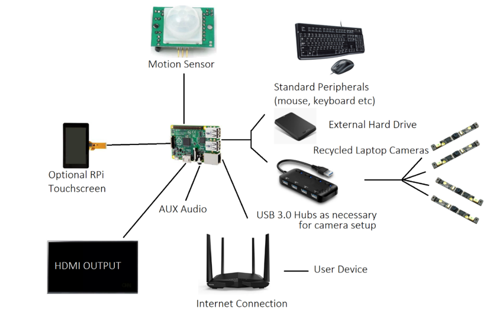
In the following YouTube videos, GOTCHA prototypes are demonstrated on a local network.
First Prototype
Second Update
Working Prototype
Technologies
The hardware required for this project depends on the individual scale. The central and most essential piece of equipment is the Raspberry Pi. These machines come in a variety of different specifications, but for this project we just need it to have access to the internet and the ability to store and output audio files. Additional hardware required would be the external speakers and required wiring, a mobile device to trigger the system and any additional hardware required such as lights, cameras, motion sensors etc. Raspberry Pi OS and app development software would be required.
In list form:
• Single Board Computer, Raspberry Pi with MotionEyeOS SD card.
• USB Cameras, some included with product, user can include their own.
• USB Cables.
• USB Repeaters.
• Container of Black Silicone and applications tools.
• Plastic or Wooden Box, Modular.
Skills Required
The project requires knowledge of command line, how to install and operate a Raspberry Pi and how to operate the OS Raspbian. It also requires some technical skills in setting up a sound system and wiring up cameras and other devices.
Installing this system will also require the user to be able to alter their router’s settings to use port forwarding. App development skills will also be essential to creating a smoothly operating system that does not require full command line input every time.
In addition to the software related skills required, the ability to re wire USB cables with the use of a soldering iron is essential to the completion of the included recycled GOTCHA cameras, which are laptop cameras extracted from defunct laptops.
Testing
Our CEO Matthew will begin testing the product within 2 weeks of the completion of the report. GOTCHA will be installed at his Brother’s Rural home, which was recently burglarized while he and his family were out of town. Having a newborn baby and 3 small children, concern over the break in has led himself and his wife to consider the installation of security measures. The user need not have a background in Security or Information Technology in order to install and operate the system as a user-friendly guide will be included in the final product, however a secure place to attach the main board and any displays required would be recommended.
A successful test of GOTCHA would involve the system remaining functional for at least a week of constant operation, including camera recordings and audio output.
Timeframe
The Following Table shows our projected timeframe for the development and completion of our project, GOTCHA.
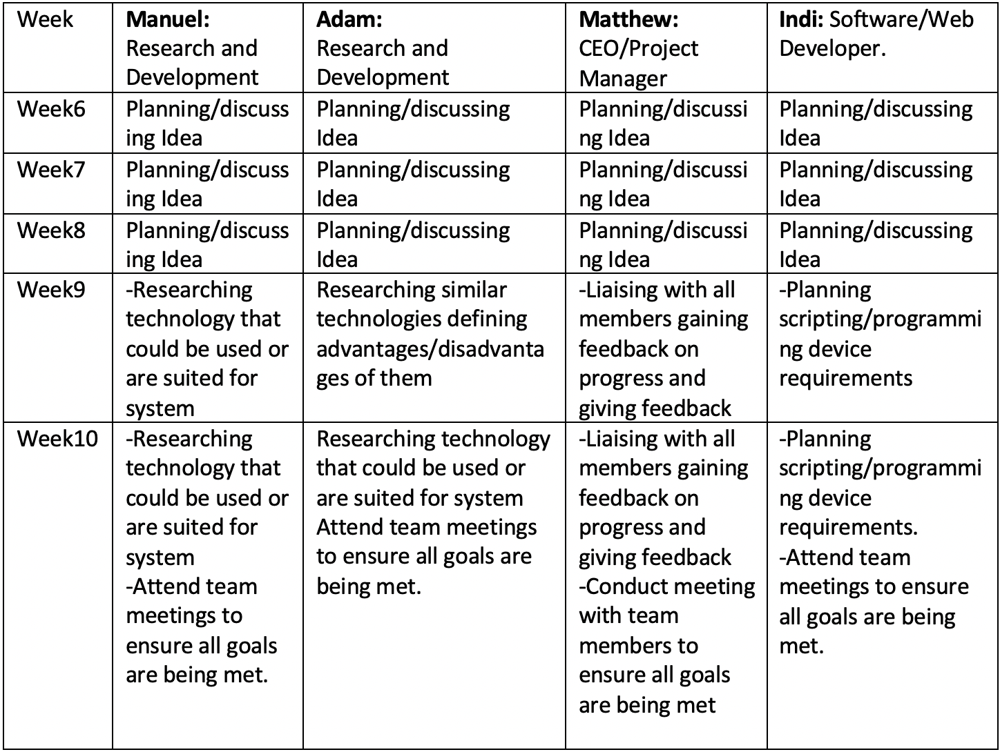
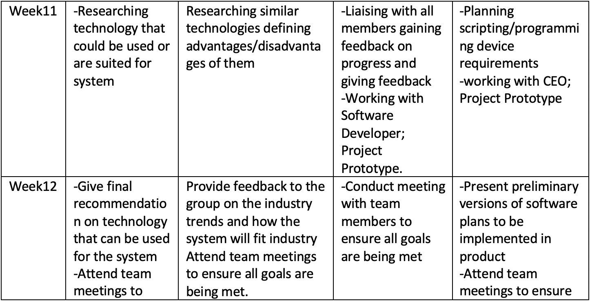
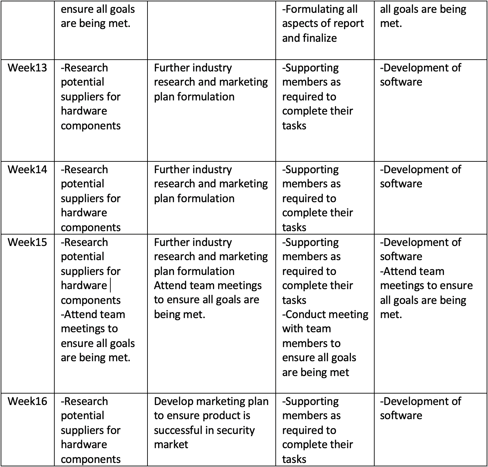
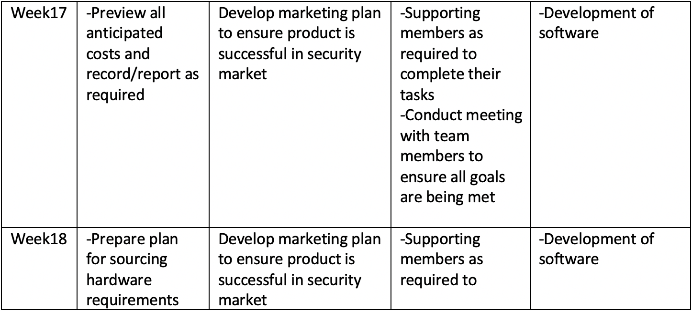
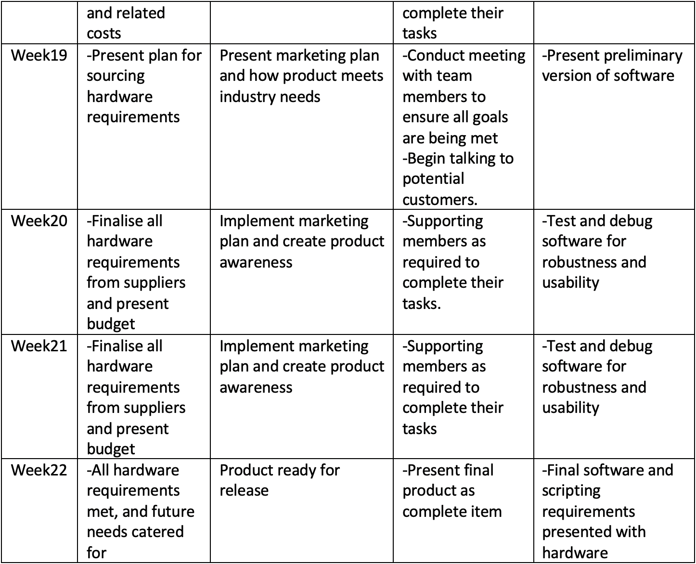
Although the GOTCHA! Security system design is one that is made to be more risk free than that of other similar products that are available, due to the lower entry cost and more simple installation and usability. There are certainly potential downfalls that could arise for the product as it enters the market.
There are multiple risks of all security systems such as this that the product is not impervious to such as camera failure or damage that may overall impact the security output of the system. For example, if the system was used to monitor intrusion and a single camera was damaged, it is likely that the system may miss an intruder at an entry point and then pick them up on another camera at a later period where they could have already breached security.
Other hardware that may fail could be the Raspberry Pi Boards that control the system and may render a significant portion or even the whole system the system offline. These are common risks associated with all camera systems, even so they may still deter potential customers.
The perceived marketability of the product may also be slightly off from the actual perception of the market once the product is available. Currently the GOTCHA! System is one that is cheap and easy to use and implement and that is a key attraction compared to other systems which may be far more expensive and require more infrastructure. There is a risk that potential buyers could in fact be deterred by the lower price point and more simplistic design as they feel it may reflect the quality of the product when in fact it more reflects the ingenuity of the design and the potential it must be scaled for whatever the requirement at a reduced cost.
Although there are always risks with new product implementation that prospective customers would have to weigh up, the low cost and simplistic design of the GOTCHA! System will captivate customers and if there was a need to replace parts of systems, it could be done at a very low cost when compared to replacement parts for other security systems.
An investor has heard of our product and decided that our GOTCHA is the right kind of thing for them to invest in. To this end, we have been offered 4 employees and a small amount of resources to further develop the project for manufacture and release.
Software Developer:
The Software Developer would be responsible for the implementation of the Operating System and the development of a personalised Linux environment for GOTCHA! And a secure smartphone app that would be easily able to control the system from anywhere with internet access. Obviously, this means the software developer would need to have knowledge of several programming languages and a good general knowledge of Linux.
Engineer:
Engineer: An Engineer to innovate ways to improve the stability and efficiency of our device, and possibly innovate newer and more efficient components for the GOTCHA brand computers. They would be initially responsible for the re-wiring of our recycled camera parts, problem solving and innovation, but the role would no doubt evolve over time should the scope increase.
Manufacturer:
Manufacturer: For the small scale, someone would need to look over each product before shipping. This means that each model needs to be tested to make sure it works before being packaged to ensure quality control. This person would need to understand the basics of the electronics and software involved and have a high attention to detail. It would most likely be necessary to have more than one person filling this role as it is the most labour intensive and time consuming and to that end, 2 people would be required. This is of course assuming that myself or another member of CINCO is already acting as a project manager, otherwise one would need to be hired.